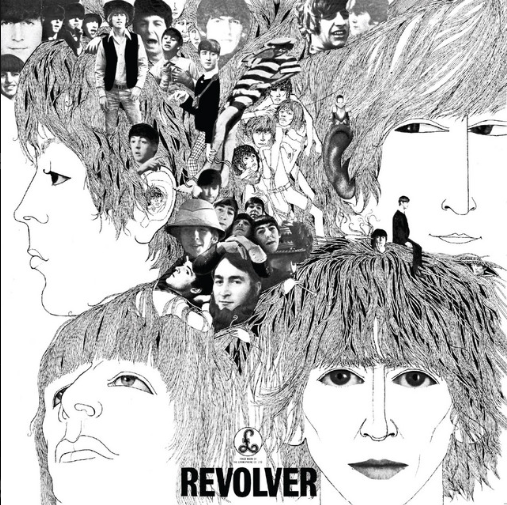
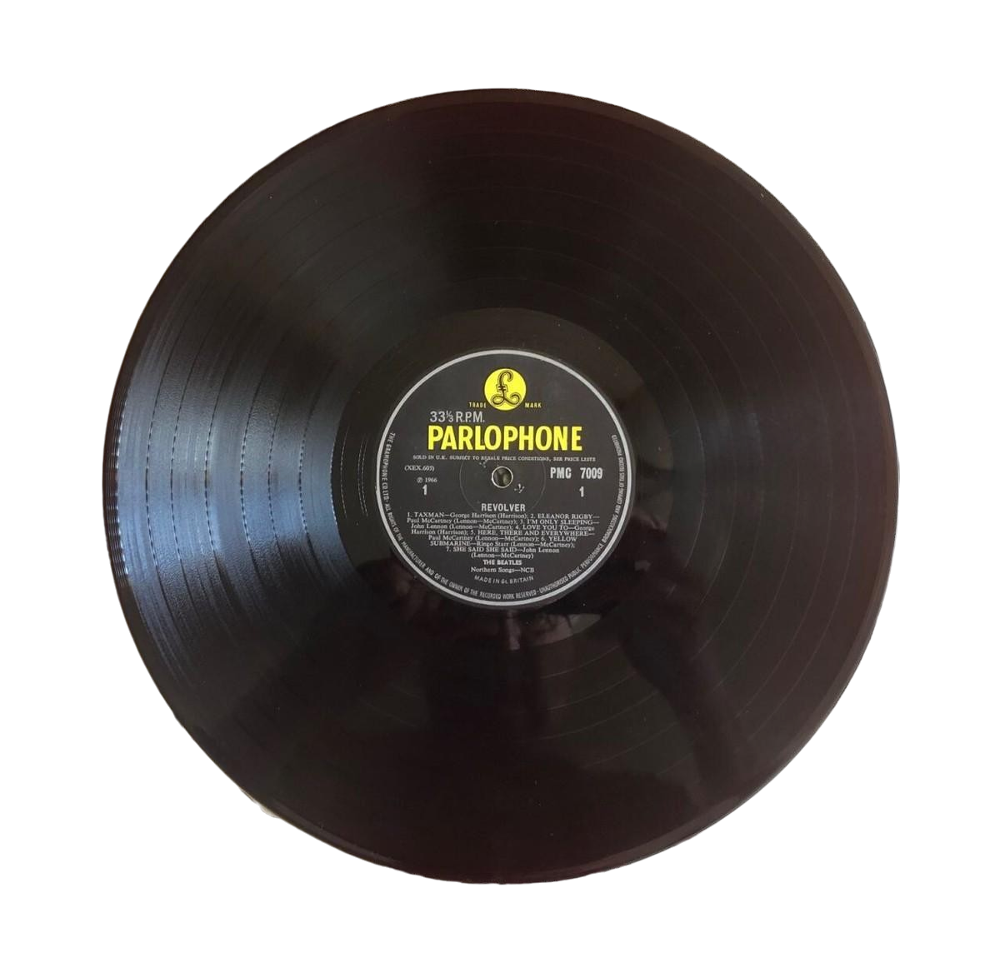
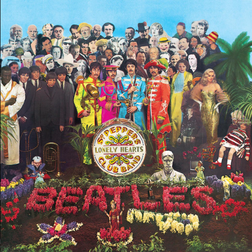
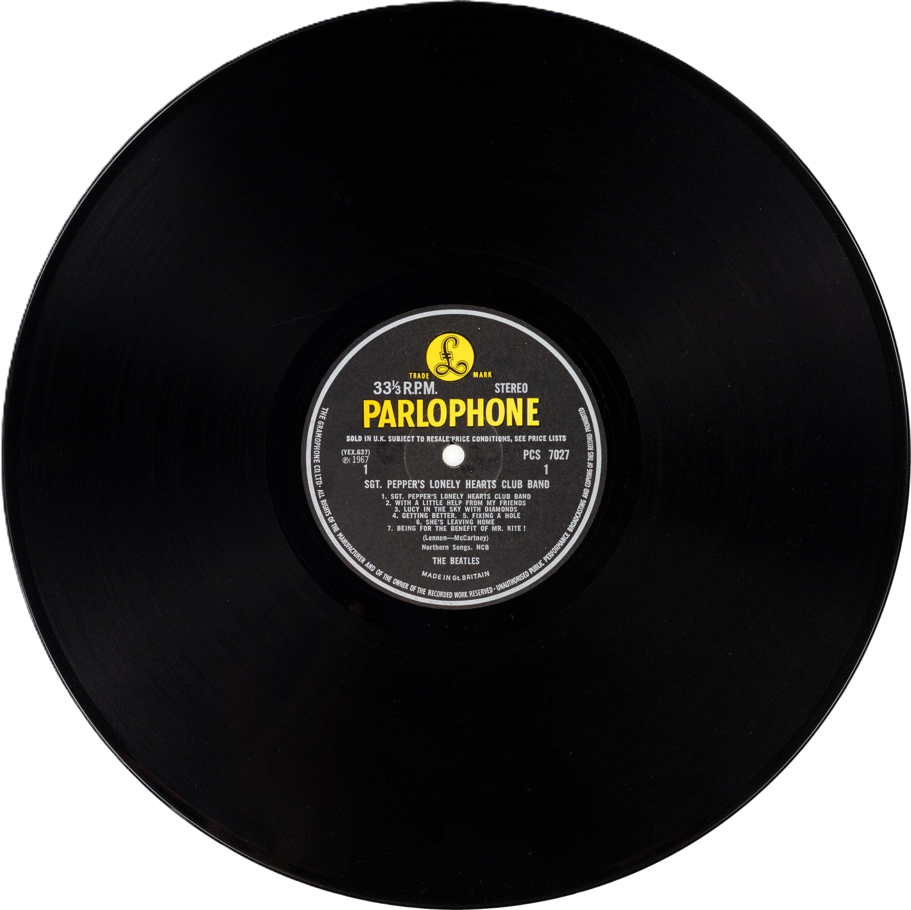
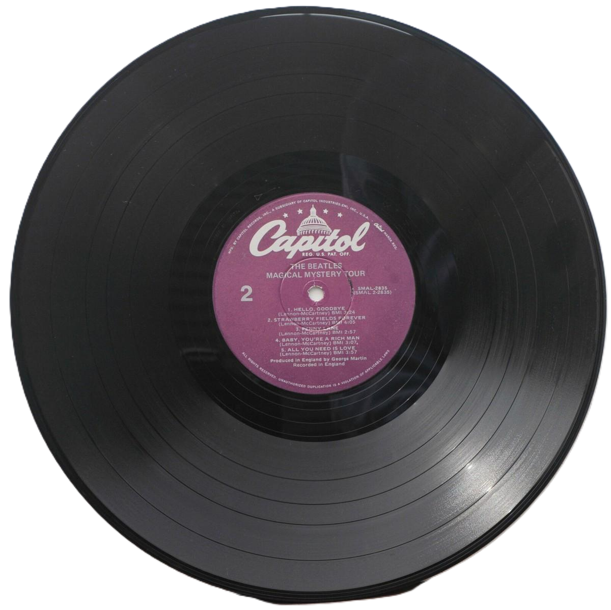

Psychedelic Era
1966-1968
Exaustos das turnês, os Beatles encerraram os shows em agosto de 1966 e transformaram o estúdio em seu principal instrumento. Influenciados pela contracultura e pela música de vanguarda, criaram colagens sonoras, fitas tocadas ao contrário e arranjos sinfônicos que definiram o Verão do Amor.


Revolver (1966)
O disco, lançado em agosto de 1966, marca a transição definitiva da banda de um grupo de apresentações ao vivo para um projeto focado exclusivamente em estúdio — eles encerraram suas turnês logo após o lançamento. Em Revolver, os Beatles abandonaram as fórmulas convencionais do pop para explorar novas texturas sonoras:
- Uso pioneiro de fitas reproduzidas ao contrário (backmasking), loops de fita, distorções vocais e ADT
- Incorporação de instrumentos indianos (cítara e tabla em Love You To), arranjos de cordas clássicos sem instrumentos de rock (Eleanor Rigby), metais de soul music (Got to Get You into My Life) e psicodelia intensa (Tomorrow Never Knows).
Curiosidade
O título Revolver faz referência ao movimento giratório de um disco de vinil na vitrola (revolving), e não a um revólver. Antes de escolherem esse nome, a banda cogitou títulos como Abracadabra, Magic Circles, Bubble and Squeak e Pendulum.
Destaques:
- Eleanor Rigby
- Tomorrow Never Knows


Sgt. Pepper's Lonely Heart Club Band
Lançado em maio de 1967, Sgt. Pepper's Lonely Hearts Club Band é o oitavo álbum de estúdio dos Beatles e amplamente considerado um dos discos mais influentes da história da música popular, consolidando o conceito de "álbum como obra de arte" e simbolizando o auge do movimento psicodélico e do Verão do Amor.
Após abandonarem os shows em 1966, a banda passou mais de quatro meses experimentando livremente em estúdio. Sob o conceito de uma banda fictícia com uniformes coloridos — ideia de Paul McCartney —, os músicos se libertaram de rótulos para fundir rock, orquestra sinfônica, música indiana e sons de vanguarda em um álbum contínuo e sem pausas entre as faixas.
Curiosidade
A teoria "Paul is Dead" diz que Paul McCartney morreu em 1966 e foi substituído por um sósia. Em Sgt. Pepper's, os fãs viam a apresentação do personagem Billy Shears como a introdução oficial desse substituto, além de interpretarem a capa do disco como um funeral — com um arranjo de flores em formato de túmulo e uma mão erguida sobre a cabeça de Paul, simbolizando sua morte.
Destaques:
- A Day In the Life
- Lucy in the Sky with Diamonds


Magical Mystery Tour (1967)
O disco, lançado em novembro de 1967 nos Estados Unidos (e como EP duplo em dezembro no Reino Unido), funciona como uma extensão ainda mais surreal e colorida de Sgt. Pepper's. Originalmente concebido como a trilha sonora de um filme experimental para a televisão dirigido pela própria banda, o álbum mergulha de cabeça na psicodelia britânica, combinando o teatro de variedades inglês (music hall), colagens sonoras eletrônicas inspiradas na música clássica de vanguarda e arranjos orquestrais complexos.
Curiosidade
O projeto nasceu sem roteiro definido: os Beatles alugaram um ônibus colorido, encheram o veículo de atores, amigos e familiares e saíram filmando pelo interior da Inglaterra. O filme foi massacrado pela crítica na estreia televisiva, mas a trilha sonora se tornou um sucesso absoluto.
Destaques:
- Strawberry Fields Forever
- All You Need is Love